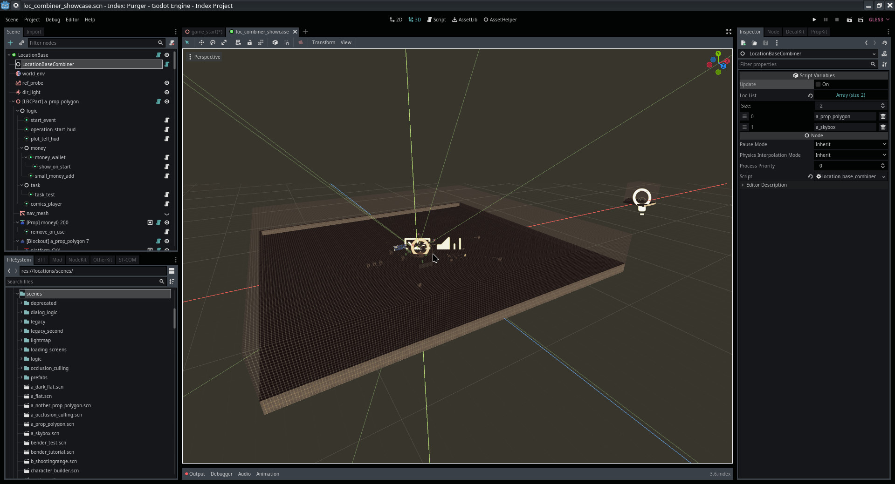

Module: location_base_combiner
Documentation last edited: October 23, 2025 at 14:33 UTC
Description
It is not recommended to use this feature, because it is incomplete, untested, and is confirmed to have issues. Its development was dropped because it wasn't plausible enough to use. Overall preference was given to a bunch of smaller locations that are optimized for loading screens instead.
It is worth mentioning that Godot literally breaks when locations get too big. One of the flaws of this system's idea is related to this fact. Experimental m_day1_x failed due to overall amount of questionable behaviors/bugs and unexplained crashes that happened during playtesting of three players that tested it.
Please, do not make your locations too big in terms of overall size or overall amount of nodes to avoid trouble.
It is worth mentioning that Godot literally breaks when locations get too big. One of the flaws of this system's idea is related to this fact. Experimental m_day1_x failed due to overall amount of questionable behaviors/bugs and unexplained crashes that happened during playtesting of three players that tested it.
Please, do not make your locations too big in terms of overall size or overall amount of nodes to avoid trouble.
The Location Base Combiner is a system that merges multiple locations into a single "continuous" location. It handles level stitching, environment setup, and runtime management of combined locations. Its main purpose is about lowering loading screens between locations to the minimum, while wasting more RAM and VRAM.
How to use it in a location
- Create a new location for this one, or use it in an existing one, up to you
- Create a
LocationBaseCombiner
node

- Add locations you want to combine into list

- Click on
Update
button
This is a destructive operation. It will remove all nodes in the scene and replace it with its own setup. You were warned.
- Witness combined locations :)

How does it really work?
It basically adds all mentioned locations into one. It is rewriting some of the location events to resolve potential conflicts, to get this kind of information
LOC_UNIQUE_VARS
constant is used in the nodes that are processed in
LocationBaseCombinerPart
.
It is not removing loading screens completely
, but
makes them much faster
. Sadly it happens
in exchange for the initial loading screen being longer
. Practically, it allows switching between "combined" locations faster, and if you are switching to a location that isn't combined into this one - it'll change the entire location fully.
General Information
Root directories list
docs, src
Nodes
LocationBaseCombinerPart
LocationBaseCombiner
Classes
None
Resources
None
Other Scripts
None